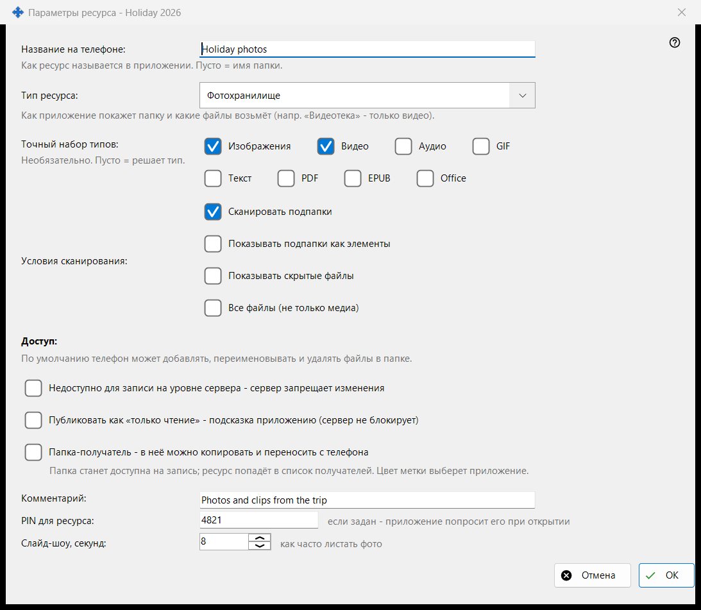
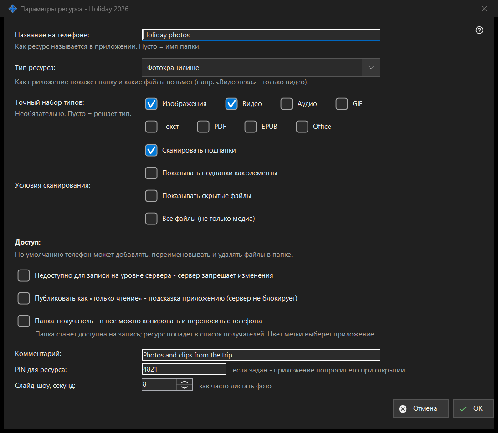

Параметры ресурса
Назначение
Параметры одной общей папки: её имя на телефоне, тип, какие файлы показывать, кто может их менять и несколько дополнений. Окно открывается кнопкой «Редактировать» главного окна и из мастера ресурса; в настоящем заголовке после тире стоит имя папки.


Порядок действий
- Задайте имя, которое увидит телефон.
- Выберите тип ресурса или точный набор типов.
- Задайте условия сканирования.
- Выберите доступ.
- В «Дополнительных параметрах» укажите комментарий, PIN и интервал слайд-шоу.
- Нажмите OK.
Элементы окна
Название и тип
«Название на телефоне:» - то, как папка называется в приложении; пусто означает имя папки. «Тип ресурса:» предлагает «Обычная папка», «Аудиотека», «Видеотека», «Фотохранилище» и «Документы». «Точный набор типов:» выбирает точные виды файлов («Изображения», «Видео», «Аудио», «Текст», «Все файлы»); пусто означает, что решает тип.
Условия сканирования
«Сканировать подпапки», «Показывать подпапки как элементы», «Показывать скрытые файлы» и «Все файлы (не только медиа)».
Доступ
По умолчанию телефон может добавлять, переименовывать и удалять файлы в папке. «Только чтение» - настоящая блокировка: сервер запрещает изменения. Подсказка «только чтение» лишь велит приложению прятать кнопки правки, сервер ничего не блокирует. Папка-получатель принимает копии и переносы с телефона; она становится доступной на запись и попадает в список получателей, а её цвет выбирает приложение.
Дополнительные параметры
Необязательный комментарий, PIN для ресурса (приложение спросит его при открытии) и интервал слайд-шоу в секундах. Параметры передаются серверу, когда вы подтверждаете окно.
Настройки менеджера · Настройки общего доступа SFTP · Настройки сервера обмена